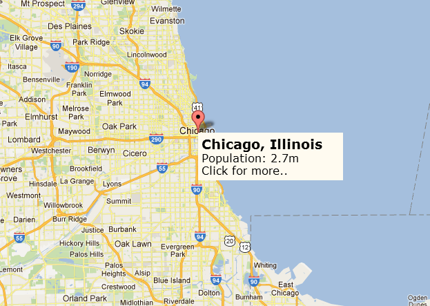

Hello, and Welcome! My name is Malik Powell!
I am a software developer currently located in the Chicagoland Area
As a former fitness professional, I'm interested in:
- Web designs based in the fitness and health realm
- App development pertaining to the fitness and health industry
- Learning and networking with other like-minded developers. (or developers that aren't like-minded to myself, I believe that we have a lot to learn from eachother regardless of what we see in the same light or not!)
About Malik
Growing up, I've always had a need to learn how things work from the inside-out. This has translated to almost all of my life and career paths, including web development! I love the feeling that I get while working on projects and really understanding how and why all of these elements come together to work harmoniously. Its such a satisfying feeling!
I also have a passion for fitness and health, Im almost 100% convinced that this is because I've always look at the human body as a machine itself. It has needs that have to be met for it to work efficiently and properly.
I've also had a passion for different categories of art and fashion for as long as I can remember. This is likely for the same reason provided above. Each of these have pieces or elements that when placed together, make a masterpiece or really cool outfit. Theres beauty in expression, no matter what if your medium is a web program or art.
If you are someone that is willing to connect, or an employer looking for a software or web developer, look no further! Please dont hesitate to reach out!
Contact Me
Now that you know a little more about me, I'd love to get to know a little more about you! Feel free to connect with me on the platforms provided below!
